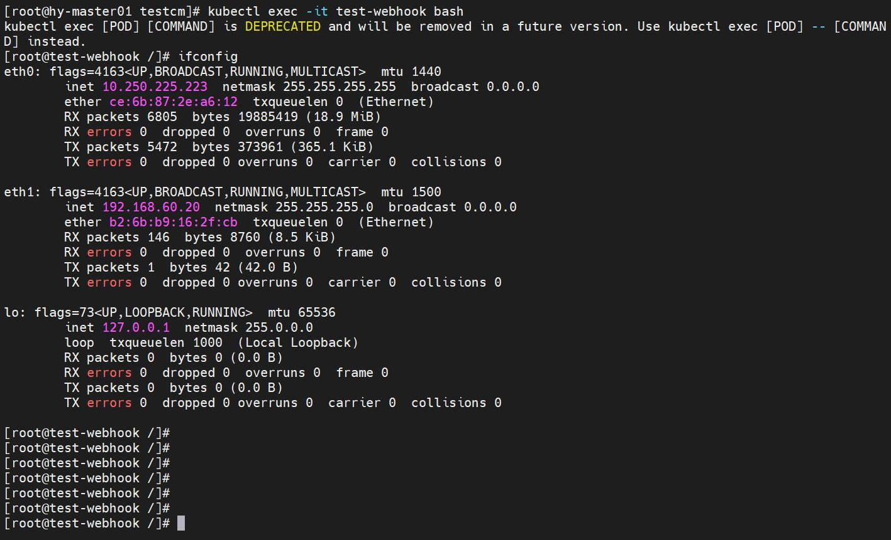

multus cni 介绍
Kubernetes缺乏支持VNF中多个网络接口的所需功能。传统上，网络功能使用多个网络接口分离控制，管理和控制用户/数据的网络平面。他们还用于支持不同的协议，满足不同的调整和配置要求。为了解决这个需求，英特尔实现了
MULTUS的CNI插件，其中提供了将多个接口添加到Pod的功能。这允许POD通过不同的接口连接到多个网络，并且每个接口都将使用其自己的CNI插件。有了
MULTUS我们可以实现kubernetes高性能网络，例如sr-iov dpdk的方案。但这需要硬件网卡的支持。我们用multus和macvlan的方案实现pod多网卡的功能；macvlan是linux内核实现的功能，实现通用pod多网卡解决方案。
部署
部署multus
multus的部署很简单，直接资源清单加载；查看部署情况，
multus已经加载，multus的daemonset做了以下事：1
2
3
4
5[root@hy-node01 bin]# ls
bridge calico-ipam flannel host-local loopback multus ptp tuning
calico dhcp host-device ipvlan macvlan portmap sample vlan
[root@hy-node01 bin]# pwd
/opt/cni/bin启动
Multus守护程序集，每个节点上运行一个pod，从而在/opt/cni/bin中的每个节点上放置一个Multus二进制文件按照字母顺序读取
/etc/cni/net.d中的第一个配置文件，并为Multus创建一个新的配置文件，即/etc/cni/net.d/00-multus.conf，此配置是自动生成并基于默认网络配置（假定是按字母顺序排列的第一个配置）在每个节点上创建一个
/etc/cni/net.d/multus.d目录，其中包含用于Multus访问Kubernetes API的身份验证信息。
内核开启macvlan
macvlan需要内核模块支持：1
2
3
4查看内核受否加载了 macvlan 模块
lsmod | grep macvlan
加载 macvlan
modprobe macvlan
创建NAD
创建
Network Attach-Definition指定为macvlan，注意cniVersion需要和multus版本一致，master则需要要宿主机存在该网卡：1
2
3
4
5
6
7
8
9
10
11
12
13
14
15
16
17
18
19apiVersion: "k8s.cni.cncf.io/v1"
kind: NetworkAttachmentDefinition
metadata:
name: macvlan-conf-1
spec:
config: '{
"cniVersion": "0.3.1",
"name": "macvlan-conf-1",
"type": "macvlan",
"master": "eth1",
"mode": "bridge",
"ipam": {
"type": "whereabouts",
"range": "192.168.60.0/24",
"range_start": "192.168.60.20",
"range_end": "192.168.60.50",
"gateway": "192.168.60.1"
}
}'我们的
ipam使用whereabouts：whereabouts是分配IP地址的IP地址管理 （IPAM）CNI插件，可在集群范围内分配IP地址。用以代替host-local;- 下面创建一个
pod来验证一下，通过注解annotations来引入一个NAD，当然也可以指定多个NAD插入多张网卡：
1
2
3
4
5
6
7
8
9
10
11
12
13
14
15
16
17
18
19
20
21
22
23
24
apiVersion: v1
kind: Pod
metadata:
name: "test-webhook"
annotations:
k8s.v1.cni.cncf.io/networks: macvlan-conf-1@eth1
namespace: default
labels:
app: "test-webhook"
spec:
containers:
- name: test-webhook
image: "centos:7.9.2009"
command:
- sleep
- "3600"
resources:
limits:
cpu: 200m
memory: 500Mi
requests:
cpu: 100m
memory: 200Mi创建
pod，查看网络，我们看到了pod里的eth1，网段也是我们通过whereabouts定义的，如下图所示：1
2
3
4
5
6
7
8
9
10
11
12
13
14
15
16
17
18
19
20
21
22
23
24
25
26[root@hy-master01 testcm]# kubectl exec -it test-webhook bash
kubectl exec [POD] [COMMAND] is DEPRECATED and will be removed in a future version. Use kubectl exec [POD] -- [COMMAND] instead.
[root@test-webhook /]# ifconfig
eth0: flags=4163<UP,BROADCAST,RUNNING,MULTICAST> mtu 1440
inet 10.250.225.223 netmask 255.255.255.255 broadcast 0.0.0.0
ether ce:6b:87:2e:a6:12 txqueuelen 0 (Ethernet)
RX packets 6805 bytes 19885419 (18.9 MiB)
RX errors 0 dropped 0 overruns 0 frame 0
TX packets 5472 bytes 373961 (365.1 KiB)
TX errors 0 dropped 0 overruns 0 carrier 0 collisions 0
eth1: flags=4163<UP,BROADCAST,RUNNING,MULTICAST> mtu 1500
inet 192.168.60.20 netmask 255.255.255.0 broadcast 0.0.0.0
ether b2:6b:b9:16:2f:cb txqueuelen 0 (Ethernet)
RX packets 146 bytes 8760 (8.5 KiB)
RX errors 0 dropped 0 overruns 0 frame 0
TX packets 1 bytes 42 (42.0 B)
TX errors 0 dropped 0 overruns 0 carrier 0 collisions 0
lo: flags=73<UP,LOOPBACK,RUNNING> mtu 65536
inet 127.0.0.1 netmask 255.0.0.0
loop txqueuelen 1000 (Local Loopback)
RX packets 0 bytes 0 (0.0 B)
RX errors 0 dropped 0 overruns 0 frame 0
TX packets 0 bytes 0 (0.0 B)
TX errors 0 dropped 0 overruns 0 carrier 0 collisions 0
上面就是
multus的简单演示，硬件允许，我们可以通过sr-iov，dpdk实现k8s高性能网络。